These geoms can be used to draw horizontal or vertical reference
lines in a ggplot. They use the data in the aesthetics x0 and y0
to compute their median or mean and draw them as a line. This is copied directly
from the ggpath package.
Arguments
- ...
Arguments passed on to
ggpath::geom_mean_lines,ggpath::geom_median_linesmappingSet of aesthetic mappings created by
aes().dataThe data to be displayed in this layer. There are three options:
If
NULL, the default, the data is inherited from the plot data as specified in the call toggplot().A
data.frame, or other object, will override the plot data. All objects will be fortified to produce a data frame. Seefortify()for which variables will be created.A
functionwill be called with a single argument, the plot data. The return value must be adata.frame, and will be used as the layer data. Afunctioncan be created from aformula(e.g.~ head(.x, 10)).na.rmIf
FALSE, the default, missing values are removed with a warning. IfTRUE, missing values are silently removed.show.legendlogical. Should this layer be included in the legends?
NA, the default, includes if any aesthetics are mapped.FALSEnever includes, andTRUEalways includes. It can also be a named logical vector to finely select the aesthetics to display.inherit.aesIf
FALSE, overrides the default aesthetics, rather than combining with them. This is most useful for helper functions that define both data and aesthetics and shouldn't inherit behavior from the default plot specification.
Value
A ggplot2 layer (ggplot2::layer()) that can be added to a plot
created with ggplot2::ggplot().
Details
These functions have been outsourced to the ggpath package.
See ggpath::geom_median_lines and ggpath::geom_mean_lines for details.
Aesthetics
geom_median_lines() and geom_mean_lines() understand the following
aesthetics (at least one of the bold aesthetics is required):
x0 - The variable for which to compute the median/mean that is drawn as vertical line.
y0 - The variable for which to compute the median/mean that is drawn as horizontal line.
alpha = NA- The alpha channel, i.e. transparency level, as a numerical value between 0 and 1.color = "red"- The color of the drawn lines.linetype = 2- The linetype of the drawn lines.size = 0.5- The size of the drawn lines. Deprecated as of ggplot2 v3.4.0, uselinewidthinstead.linewidth = 0.5- The width of the drawn lines. Starting at ggplot2 v3.4.0.
See also
The underlying ggplot2 geoms geom_hline() and geom_vline()
Examples
library(ggplot2)
# inherit top level aesthetics
ggplot(mtcars, aes(x = disp, y = mpg, y0 = mpg, x0 = disp)) +
geom_point() +
geom_median_lines() +
geom_mean_lines(color = "blue") +
theme_minimal()
# draw horizontal line only
ggplot(mtcars, aes(x = disp, y = mpg, y0 = mpg)) +
geom_point() +
geom_median_lines() +
geom_mean_lines(color = "blue") +
theme_minimal()

# draw vertical line only
ggplot(mtcars, aes(x = disp, y = mpg, x0 = disp)) +
geom_point() +
geom_median_lines() +
geom_mean_lines(color = "blue") +
theme_minimal()
# choose your own value
ggplot(mtcars, aes(x = disp, y = mpg)) +
geom_point() +
geom_median_lines(x0 = 400, y0 = 15) +
geom_mean_lines(x0 = 150, y0 = 30, color = "blue") +
theme_minimal()
